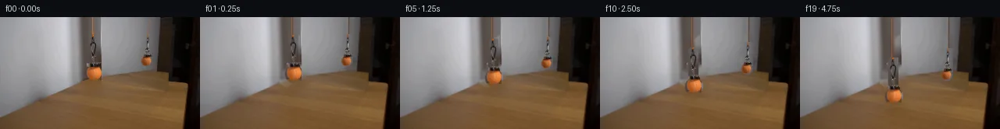

![首帧]()

Round 00
2026-11-05T03:35:51.345986+00:00像素候选变化代码 +194/−0inspection 更新
pixels 5d3e862e8e4c4c66 · code 0ecd2e111b0e1475
查看本轮 generate.py 真实 diff
--- previous/generate.py +++ current/generate.py @@ -0,0 +1,194 @@ +#!/usr/bin/env python3 +"""Generate the 20-frame locked-camera lowering sequence with local pixel tools.""" + +from pathlib import Path + +import cv2 +import numpy as np +from PIL import Image, ImageDraw, ImageFilter + +import artifact_io + + +ROOT = Path(__file__).resolve().parent +W, H = 256, 144 + + +def ellipse(mask, center, axes, value=255): + cv2.ellipse(mask, center, axes, 0, 0, 360, value, -1, lineType=cv2.LINE_AA) + + +def build_masks(source): + """Return soft extraction masks and a larger mask used to restore the set.""" + gray = cv2.cvtColor(source, cv2.COLOR_RGB2GRAY) + r, g, b = [source[:, :, i] for i in range(3)] + orange = (r.astype(int) > g.astype(int) + 28) & (r.astype(int) > b.astype(int) + 45) + + real = np.zeros((H, W), np.uint8) + # Tennis ball and the broad lower magnet housing. + ellipse(real, (120, 73), (11, 11)) + cv2.ellipse(real, (120, 63), (7, 5), 0, 0, 360, 255, -1, lineType=cv2.LINE_AA) + # Thin hook, ring, and stem: select dark/orange source pixels inside tight ROIs, + # then expand by one pixel so antialiased metal edges travel with the object. + candidate = ((gray < 119) | orange).astype(np.uint8) * 255 + roi = np.zeros_like(real) + cv2.rectangle(roi, (114, 23), (124, 67), 255, -1) + thin = cv2.bitwise_and(candidate, roi) + thin = cv2.dilate(thin, np.ones((3, 3), np.uint8), iterations=1) + real = cv2.max(real, thin) + # Keep extraction below the fixed top entry; the cord itself is redrawn. + real[:23] = 0 + + reflected = np.zeros((H, W), np.uint8) + ellipse(reflected, (188, 56), (7, 7)) + roi[:] = 0 + cv2.rectangle(roi, (184, 22), (194, 52), 255, -1) + thin = cv2.bitwise_and(candidate, roi) + thin = cv2.dilate(thin, np.ones((3, 3), np.uint8), iterations=1) + reflected = cv2.max(reflected, thin) + reflected[:22] = 0 + + # Larger restoration masks include the old cords, silhouettes, and shadows. + restore = np.zeros((H, W), np.uint8) + cv2.line(restore, (118, 0), (118, 32), 255, 4) + cv2.rectangle(restore, (113, 23), (126, 69), 255, -1) + ellipse(restore, (120, 73), (13, 13)) + cv2.ellipse(restore, (121, 83), (18, 6), 0, 0, 360, 255, -1) + + cv2.line(restore, (190, 0), (190, 34), 255, 4) + cv2.rectangle(restore, (184, 21), (194, 52), 255, -1) + ellipse(restore, (188, 56), (9, 9)) + restore = cv2.dilate(restore, np.ones((3, 3), np.uint8), iterations=1) + return real, reflected, restore + + +def restored_background(source, restore): + """Inpaint the vacated objects while retaining the source's smooth set texture.""" + bgr = cv2.cvtColor(source, cv2.COLOR_RGB2BGR) + base = cv2.inpaint(bgr, restore, 4.0, cv2.INPAINT_TELEA) + base = cv2.cvtColor(base, cv2.COLOR_BGR2RGB) + # The tabletop is subtly directional. Blend a little horizontally sampled grain + # into the restored foreground footprint so it does not look like a flat smudge. + yy, xx = np.mgrid[:H, :W] + table_zone = (restore > 0) & (yy >= 80) & (xx < 150) + sampled = np.roll(source, 24, axis=1) + base[table_zone] = ( + 0.78 * base[table_zone].astype(np.float32) + + 0.22 * sampled[table_zone].astype(np.float32) + ).astype(np.uint8) + return base + + +def paste_shifted(canvas, source, mask, dx, dy): + """Alpha-composite source pixels shifted by an integer displacement.""" + transform = np.float32([[1, 0, dx], [0, 1, dy]]) + moved_rgb = cv2.warpAffine( + source, transform, (W, H), flags=cv2.INTER_LINEAR, + borderMode=cv2.BORDER_CONSTANT, borderValue=(0, 0, 0) … diff truncated; 107 more lines …